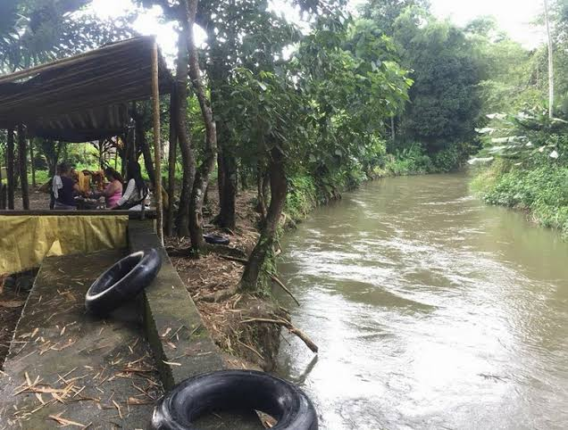
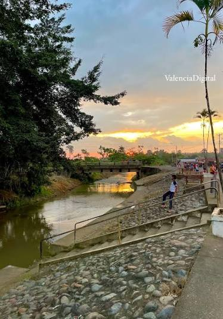
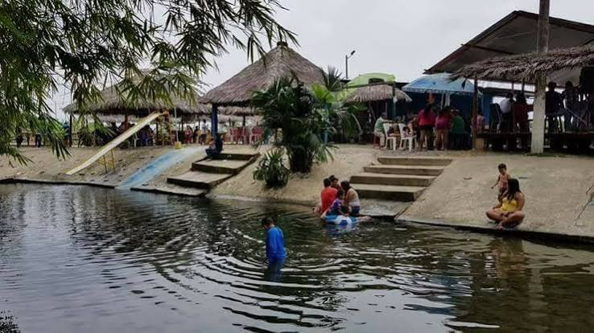
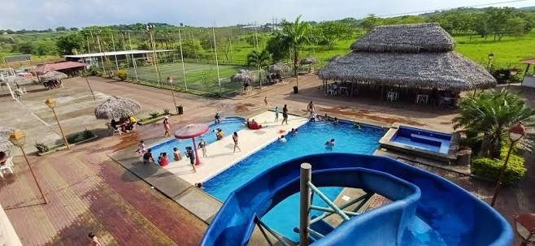
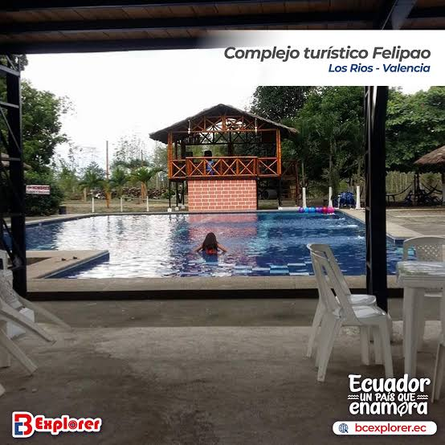
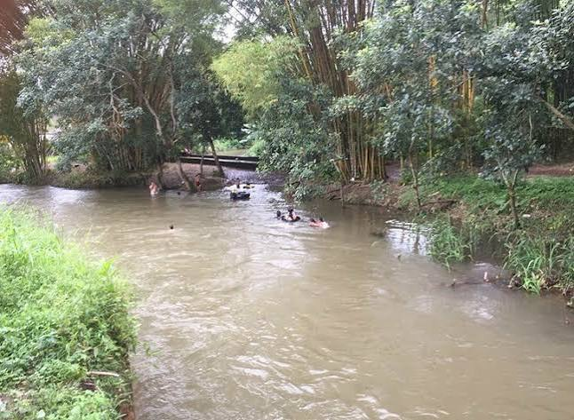
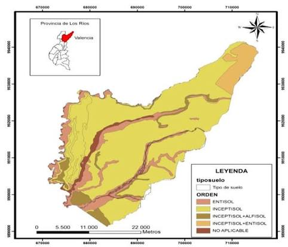

El cantón Valencia está ubicado al noreste de la provincia de Los Ríos, Ecuador. Sus orígenes se remontan aproximadamente a 1887 y fue parroquia del cantón Quevedo desde el 17 de agosto de 1944. Se cantonizó oficialmente el 29 de diciembre de 1995, aunque sus fiestas de cantonización se celebran el 13 de diciembre. Es conocido como el "Jardín de Los Ríos" por sus paisajes naturales y tierras fértiles. Su economía se basa principalmente en la agricultura y la ganadería, destacándose los cultivos de banano, cacao, café, arroz y maíz.
Cuenta con playas de río donde los visitantes pueden nadar, pescar y disfrutar de la naturaleza. También se realizan campeonatos de ecuavóley durante la época de Carnaval.

Es visitado por su río de aguas claras, su malecón, cabañas y canchas deportivas. Además, ofrece platos tradicionales de la gastronomía local.

Es atractivo porque cuenta con piscinas, toboganes, cabañas, hamacas y un estero natural. Es ideal para descansar y divertirse en familia.

Es visitado por su entorno natural, piscina de tilapias, canchas y cabañas para compartir con familiares y amigos.

Es turístico porque ofrece piscinas, restaurante, bar, juegos infantiles y cabañas para disfrutar de un día de recreación.

Es un atractivo natural rodeado de vegetación. Los visitantes pueden realizar recorridos en boyas inflables, disfrutar del río y probar la comida típica de la zona.

Es un espacio de encuentro familiar que cuenta con áreas verdes, piletas y patio de comidas. Es ideal para caminar, descansar y disfrutar del centro de la ciudad.

El actual alcalde del cantón Valencia es el ingeniero Daniel Vicente Macías López, quien ejerce sus funciones durante el período 2023-2027. Está encargado de dirigir la administración municipal y promover obras y proyectos para el desarrollo y bienestar de sus habitantes.
Según el Censo de Población y Vivienda de 2022 del INEC, el cantón Valencia cuenta con 51.509 habitantes, de los cuales 22.996 pertenecen al área urbana y 28.513 al área rural.

Volver al índice principal